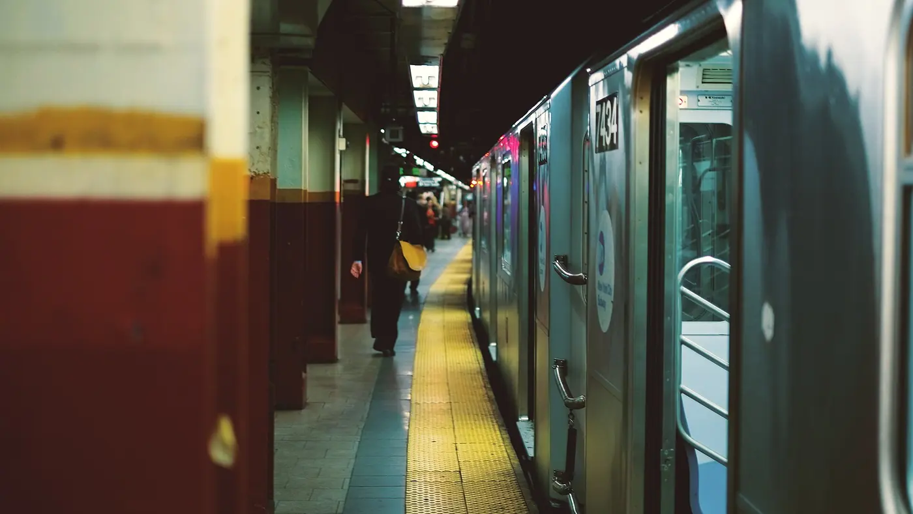
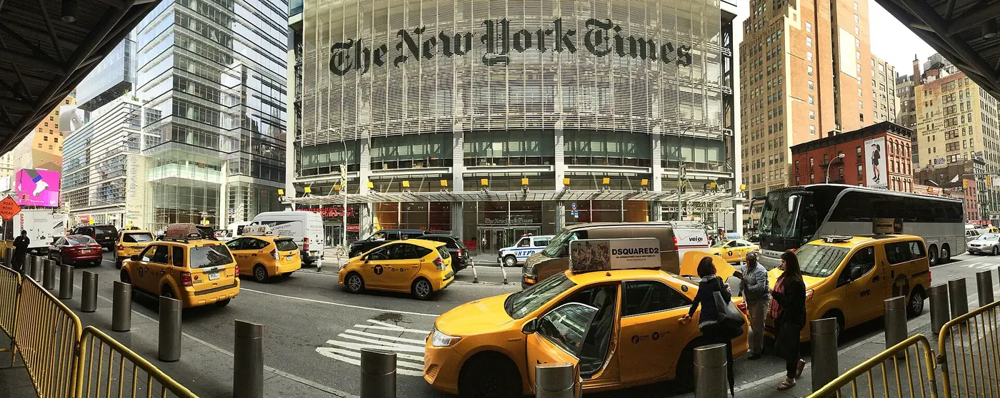

MoMA
Modern art over five floors, plus a garden and a film programme. The free Friday evening is for New York State residents only, so most visitors pay $30. Book a timed slot.

New York gets about 125 wet days a year, so rain is a scheduling problem rather than an emergency. Here is how to move the day indoors without wasting it.
New York rain rarely settles in for a grey week. It arrives hard, floods a few intersections and moves on, which means most wet days still have a dry window in them.
Treat a rainy day as a chance to do the indoor things you would otherwise skip: the museum you were going to rush, the food hall you were going to walk past, the matinee you were saving. Everything below is within a few minutes of a subway station.
Expect 9–11 wet days in most months, slightly fewer in September and October. Build one indoor anchor into each day and the weather cannot ruin the trip.

Book timed entry before you leave the hotel. Turning up at 11am on a rainy Saturday and hoping is how you spend the morning in a queue.
Modern art over five floors, plus a garden and a film programme. The free Friday evening is for New York State residents only, so most visitors pay $30. Book a timed slot.
The largest art museum in the country, and the one where rain is welcome — four hours will not exhaust it. Closed Wednesdays; pay-what-you-wish for New York State residents and tri-state students only.
The reliable choice with children: dinosaurs, the blue whale and the planetarium. $28 general admission, $43 with one exhibition; tri-state residents pay what they wish.
The plaza is free 8am–8pm, but the museum is the indoor experience: about two hours and emotionally demanding. Tickets $24–36; New Yorkers have a free window Sundays 4–7pm, with ID.
Guided tours of restored Orchard Street apartments and the immigrants who lived in them. Small groups, timed entry, book ahead — walk-ups rarely get in.
The Bronx Museum is always free, the Brooklyn Museum is suggested admission with free First Saturday evenings, and the Whitney is free on Friday nights for everyone.
Markets are the ideal rainy stop: indoors, free to enter, and structured so that a wet hour turns into a good lunch.
A former factory block in the Meatpacking District, now a covered market with food stalls, bakeries and shops. It is busy at lunchtime and quiet mid-afternoon. Los Tacos No. 1 has a branch here, with tacos at $5–6 each.
On the Lower East Side, Essex Market is the neighbourhood food hall: butchers, cheese, tacos, dumplings and coffee under one roof. It is less of a tourist attraction than Chelsea Market and more of a real market, which makes it the better rainy-day lunch.
The concourse and lower-level dining concourse are free, dry and five minutes from the 4, 5, 6, 7 and S trains. It is a good place to wait out a downpour with a coffee, and the Whispering Gallery outside the Oyster Bar is a free distraction.
All three are free to enter, close to subway stations and need no reservation. Budget $12–20 for lunch.

When you have had enough galleries, these are the other dry options worth the time.
The best rainy-day booking in the city: afternoon performances leave the evening free. The average paid ticket is about $131, but TKTS sells same-day seats at up to 50% off.
The New York Public Library's Rose Main Reading Room is free, beautiful and warm. LinkNYC kiosks and subway platforms have free Wi-Fi, which helps when replanning on the move.
A little planning keeps a rainy day from becoming a series of small defeats.
MoMA, the 9/11 Museum and the Tenement Museum all use timed entry, and rain pushes demand up. Book the slot before breakfast, not at the door. If you cannot make it, contact the venue — many will move a slot.
Carry a small folding umbrella rather than a large one. On crowded pavements and subway stairs, a wet canopy at eye level is nobody's friend. Shake it out before going underground; a waterproof jacket is often more useful in the wind.
Heavy rain pools at some street-level entrances and a few low-lying stations close. Do not walk through standing water on the stairs — use another entrance or the next station. Only about 150 of the system's 472 stations are step-free.
Restaurants expect weather cancellations. Call early and ask to move the booking — most would rather rebook you than mark a no-show. Check tour operators' policies too: some run rain or shine.

If the forecast is wrong and you need a plan at 9am, use this one. It is indoors almost all day and needs only one booking.
| Time | What | Where | Cost |
|---|---|---|---|
| 9.30am | Coffee and a bagel | Anywhere near your hotel | $5–8 |
| 10.30am | Museum, booked ahead | MoMA or the 9/11 Museum | $24–30 |
| 1pm | Lunch indoors | Chelsea Market or Essex Market | $12–20 |
| 3pm | A matinee or the library | Theatre District or Fifth Avenue at 42nd | $0–130 |
| 6pm | Dinner, reservation moved if needed | Neighbourhood restaurant | $120–180 for two |
About 125 days a year, or 9–11 wet days in most months. Rain is usually heavy and short rather than an all-day drizzle, so a wet morning often turns into a usable afternoon.
The Met, if you have the time and it is not a Wednesday. MoMA if you want a shorter visit, the American Museum of Natural History with children, and the Tenement Museum for a small-group indoor hour.
Almost everything: museums, markets, food halls, theatres, shops and the subway all run as normal. Observation decks stay open but are pointless in low cloud, and ferries may be delayed in high wind.
No — shows go ahead in the rain and tickets are generally non-refundable. If the production cancels, the box office will exchange or refund. Same-day TKTS seats reduce the money at risk.
Pick the right month, keep one indoor anchor a day, and a rainy Tuesday stops being a disaster.